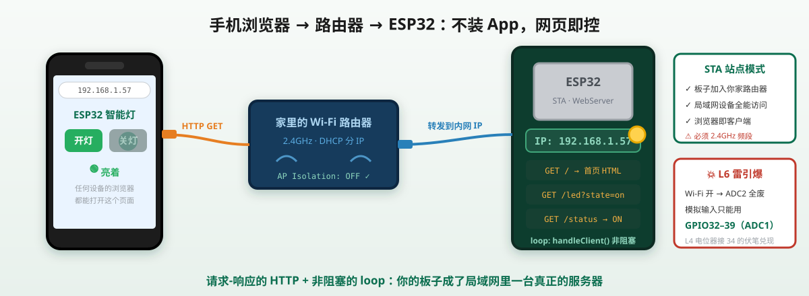

阶段四 · 无线物联 ｜ 难度：★★★★★ ｜ 预计用时：60 分钟
本课材料：ESP32 开发板 ×1、USB 线 ×1、面包板、LED（GPIO4 经 220Ω）×1、按钮（GPIO23）×1（沿用第 2 课接线）、2.4GHz Wi-Fi 路由器（必须是 2.4G，ESP32 不支持 5G） 无硬件替代：Wokwi 不支持真实 Wi-Fi 联网——本课在 Wokwi 里跑"代码结构版"（串口模拟 HTTP 请求），真机按文档联网实测

你将做出：ESP32 连上你家 Wi-Fi，手机浏览器输入一个 IP 地址——出现一个自己写的控制页面，点按钮灯立刻亮灭，页面还会实时显示灯的状态。不装 App、不连蓝牙，任何有浏览器的设备都能控制它。
第 10 课的蓝牙是"十米内、要装 App、一对一"。这一课跨过门槛：板子上网了——它有了 IP 地址，成了局域网里一台平等的小服务器。这是"物联网（IoT）"的真正起点。
本课学习目标（完成后你将拥有）：
WebServer，处理 GET 请求，实现 /led?state=on 这样的控制接口对比一下你现在拥有的三种"无线"：
| 蓝牙（L10） | Wi-Fi STA（本课） | Wi-Fi AP（本课选做） | |
|---|---|---|---|
| 拓扑 | 手机 ↔ 板子 | 板子 ↔ 路由器 ↔ 任何设备 | 板子自己当路由器 |
| 距离 | ~10 米 | 整个局域网，经路由器可跨房间 | ~30 米 |
| 谁能控制 | 只有配对的手机 | 局域网里任何设备（手机/电脑/平板） | 直连板子的设备 |
| 要 App 吗 | 通常要 | 不要，浏览器就行 | 不要 |
| 需要什么 | 板子+手机 | 板子+你家 2.4G 路由器 | 只要板子 |
本课主路线 = STA（Station，站点模式）：ESP32 像你的手机一样"加入"路由器，获得一个内网 IP（比如 192.168.1.57）。局域网内任何设备访问这个 IP，就是在访问你的板子——HTTP 请求进门，板子响应网页。
💡 AP 模式（热点模式）是什么？ 板子自己发射 Wi-Fi 热点（如
ESP32-Setup），手机直连它进行配网。两种模式可以共存（AP+STA）——很多产品"先开热点配网、再连路由"就是这个套路。本课挑战里你试配网的基础版。
WiFi.begin("你的SSID", "你的密码"); // ① 发起连接（异步！立刻返回）
// ② 轮询等待连接完成（不能 delay 死等）
while (WiFi.status() != WL_CONNECTED) { delay(500); Serial.print("."); }
// ③ 拿到 IP
Serial.println(WiFi.localIP()); // 比如 192.168.1.57
三个点必须讲透：
① WiFi.begin() 是异步的——它只是"发出加入请求"，立刻返回。连接要经过扫描、认证、DHCP 拿 IP，通常要 2~5 秒。所以 ② 必须轮询状态。
② 连接阶段的 delay(500) 是合法的——还记得第 3、7、10 课的规矩吗？"delay 只许出现在我真的什么都不能做的场合"。连接 Wi-Fi 的这 2~5 秒，板子确实没别的事可做（还没开服务器），所以这里的 delay 和第 7 课初始化失败死等一样，属于合法使用。规矩是"多任务运行时不许罚站"，不是"delay 是禁词"——这个分寸感，是第 3 课到第 10 课一路养出来的。
③ IP 是路由器分的（DHCP）——每次重启可能变！Serial.println(WiFi.localIP()) 打印出来再在手机浏览器输入。"IP 会变"这个烦恼，第 12 课 MQTT/云平台会彻底解决（云端有固定域名）。
第 10 课你观察过蓝牙断线；Wi-Fi 更常见（路由器重启、信号干扰）。millis 结构第三次立功：
void maintainWiFi() {
if (WiFi.status() == WL_CONNECTED) return; // 连着，走人
if (millis() - lastRetry < 10000) return; // 10 秒重试一次，别疯狂重连
lastRetry = millis();
Serial.println("Wi-Fi 断了，重连中...");
WiFi.disconnect();
WiFi.begin(SSID, PASS); // 重新发起
}
每圈 loop 检查一次状态，断了就按节奏重连——这就是"看门狗式保活"的雏形。无线系统的第一条军规：永远假设链路会断，把重连写进主循环。
你的手机浏览器访问 http://192.168.1.57/ 时，发生了一次最朴素的 HTTP 对话：
手机 → 板子：
GET / HTTP/1.1
Host: 192.168.1.57 ← 我要首页
板子 → 手机：
HTTP/1.1 200 OK
Content-Type: text/html
← 空一行
<html>...你的控制页...</html>
要点三条：
GET 路径，服务器回一段内容，然后连接关闭。它不保持对话——每次点击都是新的一轮（第 12 课 MQTT 会反过来：长连接）。/ 给首页，/led?state=on 是"控制灯"的动作。服务器按路径分发到不同处理函数——这就是"路由（Router）"。?state=on 叫查询参数：问号后面是键值对，板子解析出来决定动作。你手机点的每个按钮，本质是浏览器发了一个 GET 请求。零新接线——沿用第 2/10 课：LED=GPIO4（220Ω）、按钮=GPIO23（INPUT_PULLUP）。本课的战场全在代码与网络。
⚠️ 第 6 课的雷，现在引爆： 本课如果你还想读电位器（第 4 课）——Wi-Fi 开启后，ADC2 引脚（GPIO0/2/4/12–15/25–27）的
analogRead全部变成垃圾，因为射频校准征用了 ADC2。规则兑现：开 Wi-Fi 的项目，模拟输入只许用 ADC1（GPIO32–39）。好消息：本课的 LED 在 GPIO4、按钮在 GPIO23——都是数字脚，不走 ADC，完全不受影响。但如果你把第 4 课电位器（GPIO34）搬来，它在 ADC1，依然安全——当初第 4 课特意接 34 的伏笔，此刻显出价值。
// ============================================
// 第 11 课：Wi-Fi + WebServer 手机浏览器控灯
// ============================================
#include <WiFi.h>
const char* SSID = "你的WiFi名"; // ← 改成你家的
const char* PASS = "你的WiFi密码"; // ← 改成你家的
const int LED_PIN = 4;
const int BTN_PIN = 23;
WebServer server(80); // 80 = HTTP 默认端口
bool ledOn = false;
unsigned long lastStatus = 0;
unsigned long lastRetry = 0;
unsigned long lastBtnStable = 0; // 防抖状态机（第 10 课模板）
int lastRaw = HIGH, stableState = HIGH;
unsigned long lastChange = 0;
// —— 控制页（内嵌 HTML，"前后端一体"的最小形态）——
String page() {
String html = "<!DOCTYPE html><html><head>";
html += "<meta charset='utf-8'>";
html += "<meta name='viewport' content='width=device-width,initial-scale=1'>";
html += "<title>ESP32 灯控</title>";
html += "<style>body{font-family:sans-serif;text-align:center;margin-top:12vh}";
html += "h1{color:#0b6e4f}";
html += ".btn{padding:18px 44px;font-size:22px;margin:10px;border:none;";
html += "border-radius:12px;color:#fff;cursor:pointer}";
html += ".on{background:#27ae60}.off{background:#95a5a6}";
html += ".st{font-size:26px;margin-top:24px}</style></head><body>";
html += "<h1>ESP32 智能灯</h1>";
html += "<button class='btn on' onclick=\"location.href='/led?state=on'\">开灯</button>";
html += "<button class='btn off' onclick=\"location.href='/led?state=off'\">关灯</button>";
html += "<div class='st'>当前状态：";
html += ledOn ? "🟢 亮着" : "⚫ 灭了";
html += "</div></body></html>";
return html;
}
void handleRoot() { // GET / → 首页
server.send(200, "text/html", page());
}
void handleLed() { // GET /led?state=on|off
if (server.hasArg("state")) {
String s = server.arg("state");
if (s == "on") ledOn = true;
if (s == "off") ledOn = false;
digitalWrite(LED_PIN, ledOn ? HIGH : LOW);
}
server.sendHeader("Location", "/"); // 重定向回首页（按钮即刷新）
server.send(303);
}
void handleStatus() { // GET /status → 纯文本状态（供 JS 轮询）
server.send(200, "text/plain", ledOn ? "ON" : "OFF");
}
void maintainWiFi() { /* 上节的重连函数，原样放这里 */ }
void pollButton() { /* 第 10 课防抖状态机，原样放这里（触发后翻转 ledOn） */ }
void setup() {
pinMode(LED_PIN, OUTPUT);
pinMode(BTN_PIN, INPUT_PULLUP);
Serial.begin(115200);
// —— 连接 Wi-Fi（合法 delay：连接期无事可做）——
Serial.print("连接 Wi-Fi ");
WiFi.begin(SSID, PASS);
while (WiFi.status() != WL_CONNECTED) {
delay(500);
Serial.print(".");
}
Serial.println();
Serial.print("已连接！IP: ");
Serial.println(WiFi.localIP()); // ← 手机浏览器输入这个
// —— 注册路由 ——
server.on("/", handleRoot);
server.on("/led", handleLed);
server.on("/status", handleStatus);
server.begin();
}
void loop() {
server.handleClient(); // ① 有没有 HTTP 请求进门？（非阻塞，没有立刻返回）
maintainWiFi(); // ② 断线保活
pollButton(); // ③ 按钮防抖（第 10 课）
// ④ 自由：状态页每秒自刷新（页面里 meta refresh 实现）
}
WebServer server(80); + server.handleClient()
和 SerialBT.available() 同一个骨架：handleClient() 每圈 loop 查一次"有请求吗"，有就调用注册的处理函数，没有立刻返回——HTTP 服务器也活在 millis 非阻塞结构里。第 10 课的三任务，本课换成"HTTP + 保活 + 按钮"三任务，结构一模一样。
server.on("/", handleRoot)——路由注册
路径 → 函数的映射表。/ 首页、/led 控灯、/status 查状态。以后加功能就是加一行 server.on——这就是"接口（API）"的最小形态，第 12 课 MQTT 的"主题"、云端 REST API 都是这个思想的延伸。
page() 返回 String——HTML 藏在代码里
新手项目不需要单独的 HTML 文件：服务器要什么，现拼现给。你写的 <button onclick="location.href='/led?state=on'"> 是关键：
点按钮 → 浏览器跳转到 /led?state=on → 板子 handleLed() 执行 → 303 重定向回 / → 页面刷新显示新状态
一个按钮 = 一次 HTTP 往返。303 状态码的含义是"去别处（首页）"——用重定向实现"操作后自动刷新"，比写 AJAX 还简单。
server.sendHeader("Location", "/"); server.send(303);
控制类请求的标准姿势：执行动作后不返回内容，让浏览器回首页——否则用户连点"开灯"，浏览器会停在空白响应页。
handleStatus() 与"前后端分离"的种子
它只返回 ON/OFF 纯文本——这是给程序看的接口。如果你在页面里加一段 fetch('/status') 轮询，就能不刷新页面实时更新状态——那已经是现代 Web App（AJAX/前端渲染）的雏形。本课用 303 重定向保持简单，挑战 2 让你亲手升级。
maintainWiFi()——断线保活进了主循环
和蓝牙断线（第 10 课挑战 5）同一个观察结论：链路会断，重连必须写在 loop 里。Wi-Fi 的重连更频繁，所以加了 10 秒节奏限制（重连也要防抖——millis 节奏无处不在）。
SSID/PASS 为你家 Wi-Fi（必须 2.4GHz；5G 的名字改了也没用）已连接！IP: 192.168.1.x 打印出来，记下这个 IP
每次点击 = 一次完整的 HTTP 请求-响应往返：浏览器跳转 → 板子路由分发 → 执行 → 303 让浏览器回首页刷新。全程 handleClient() 非阻塞——这就是第 10 课三任务结构换上 HTTP 外衣的样子。
上图是完整闭环：点按钮 → HTTP 请求 → 路由分发 → 动作执行 → 重定向 → 页面刷新。每一步都对应代码里的一个函数——"网页控灯"没有任何魔法，只是一圈圈 loop 在接请求。
全部打勾 → 你的板子正式接入网络，成为局域网里的一台服务器。进入第 12 课，把它送上云端。
/led?state=blink，让灯以 500ms 闪 5 次（millis 写，不许 delay）——多一个路由、多一个分支。<script>setInterval(()=>fetch('/status').then(r=>r.text()).then(t=>document.getElementById('s').innerText=t),1000)</script>——从"整页刷新"升级到"局部更新"，体会前后端分离。WiFi.begin 换成 WiFi.softAP("ESP32-Setup")，手机直连这个热点再访问 192.168.4.1——没路由器也能控灯，这是产品"配网模式"的原型。WebServer server(8080)，访问要带 :8080——理解"端口是门牌号，IP 是楼号"。ledOn 变量恢复）。记录：板子重启后 LED 状态会丢（ledOn 归 false）——"状态要持久化"是第 12 课云存储的动机，把这个问题带过去。| 现象 / 报错关键词 | 原因 | 解决办法 |
|---|---|---|
一直打印 ..... 连不上 |
① SSID/密码错 ② 是 5G 路由器 ③ 2.4G 被关闭 | 核对账号密码；连 2.4G 的 Wi；路由器开"2.4/5G 合并"时试分开的名字 |
| 连上了但手机访问不了 IP | ① 手机和板子不在同一网段（手机用流量）② 路由器开了 AP 隔离 | 手机连同一 Wi-Fi；路由器关"AP 隔离/AP Isolation" |
| 浏览器一直转圈超时 | 板子程序卡死（藏了 delay/死循环） | 全文搜 delay(；确认 handleClient() 在 loop 第一行 |
| 页面乱码中文 | 编码没声明 | page() 里必须有 <meta charset='utf-8'>（本课已带） |
| 点按钮没反应/404 | 路径写错（大小写敏感） | 确认 location.href='/led?state=on' 与 server.on("/led") 一致 |
| 断网后再也不恢复 | 没写重连 / 重连太频繁被路由器拉黑 | 加 maintainWiFi()；10 秒节奏 |
| 重启后 IP 变了找不到板子 | DHCP 分配的地址不固定 | 串口重新看 IP；路由器做 DHCP 静态绑定（挑战级） |
| 上传成功但串口无 Wi-Fi 输出 | 监视器波特率错 / COM 口错 | 115200；选对端口 |
| 电位器读数在本课变垃圾 | ADC2 + Wi-Fi 冲突（第 6 课的雷） | 模拟输入换 ADC1（32–39），或本课不读模拟量 |
| 内存崩溃 / 重启（Guru Meditation） | String 拼接碎片化 | 本课页面小没事；大页面用 FPSTR/PROGMEM（进阶话题） |
网页控灯虽好，但它有个天花板：你的板子和手机必须在同一个局域网——出了家门就摸不到它了。第 12 课：MQTT 与云平台：你会把板子连上真正的互联网（MQTT 服务器），人在外面用手机流量也能收到传感器数据、发控制命令。你会学到发布/订阅模式（和 HTTP 的请求-响应完全是另一个世界观）、主题（Topic）设计，以及为什么物联网都用 MQTT——同时第 10 课的"心跳"和"回执"思想将在云上以 QoS 的形式重生。
本课程系列：从点亮一盏灯，到设计一台会自己思考的机器。